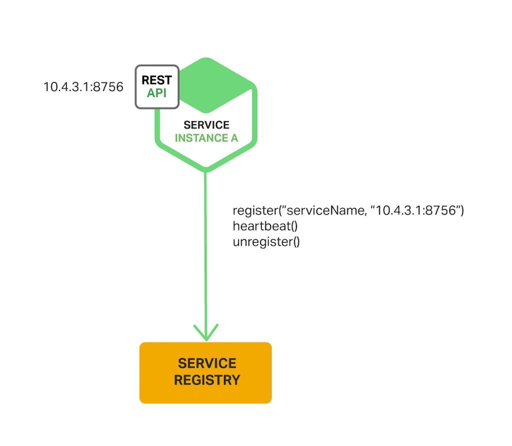
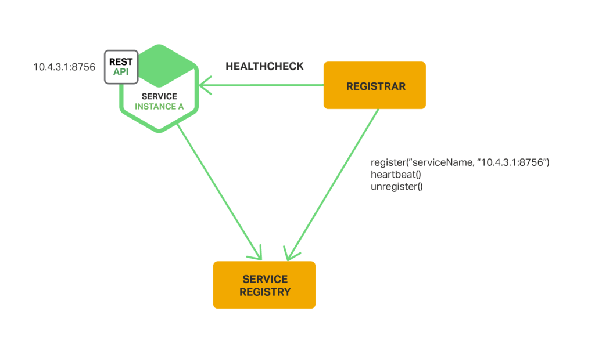

Service Discovery
Why Use Service Discovery?
Let’s imagine that you are writing some code that invokes a service that has a REST API. In order to make a request, your code needs to know the network location (IP address and port) of a service instance.
In a modern, cloud‑based microservices application, however, this is a much more difficult problem to solve as shown in the following diagram.

Service instances have dynamically assigned network locations. Moreover, the set of service instances changes dynamically because of autoscaling, failures, and upgrades. Consequently, your client code needs to use a more elaborate service discovery mechanism.
The Client‑Side Discovery Pattern
When using client‑side discovery, the client is responsible for determining the network locations of available service instances and load balancing requests across them. The client queries a service registry, which is a database of available service instances. The client then uses a load‑balancing algorithm to select one of the available service instances and makes a request.

The network location of a service instance is registered with the service registry when it starts up. It is removed from the service registry when the instance terminates. The service instance’s registration is typically refreshed periodically using a heartbeat mechanism.
Netflix Eureka is a service registry. It provides a REST API for managing service‑instance registration and for querying available instances. Netflix Ribbon is an IPC client that works with Eureka to load balance requests across the available service instances
Pros:
- Since the client knows about the available services instances, it can make intelligent, application‑specific load‑balancing decisions such as using hashing consistently.
Cons:
- It couples the client with the service registry
- Must implement client‑side service discovery logic in each programming language and framework used by your service
The Server‑Side Discovery Pattern
The client makes a request to a service via a load balancer. The load balancer queries the service registry and routes each request to an available service instance. As with client‑side discovery, service instances are registered and deregistered with the service registry.

The AWS Elastic Load Balancer is an example of a server-side discovery router. An ELB is commonly used to load balance external traffic from the Internet. However, you can also use an ELB to load balance traffic that is internal to a virtual private cloud (VPC). A client makes requests (HTTP or TCP) via the ELB using its DNS name. The ELB load balances the traffic among a set of registered Elastic Compute Cloud (EC2) instances or EC2 Container Service (ECS) containers. There isn’t a separate service registry. Instead, EC2 instances and ECS containers are registered with the ELB itself.
Pros:
- Details of discovery are abstracted away from the client (Clients simply make requests to the load balancer.)
- Unless the load balancer is provided by the deployment environment, it is yet another highly available system component that you need to set up and manage.
The Service Registry
The service registry is a key part of service discovery. It is a database containing the network locations of service instances. A service registry needs to be highly available and up to date. Clients can cache network locations obtained from the service registry. However, that information eventually becomes out of date and clients become unable to discover service instances.
Netflix Eureka is good example of a service registry. It provides a REST API for registering and querying service instances.
- A service instance registers its network location using a POST request.
- Every 30 seconds it must refresh its registration using a PUT request.
- A registration is removed by either using an HTTP DELETE request or by the instance registration timing out.
- A client can retrieve the registered service instances by using an HTTP GET request.
Other examples of service registries include:
- etcd - A highly available, distributed, consistent, key‑value store that is used for shared configuration and service discovery. Kubernetes is using etcd
- Apache Zookeeper - A widely used, high‑performance coordination service for distributed applications.
- consul
Service Registration Options
The Self‑Registration Pattern
When using the self‑registration pattern, a service instance is responsible for registering and deregistering itself with the service registry. Also, if required, a service instance sends heartbeat requests to prevent its registration from expiring. A good example of this approach is the Netflix OSS Eureka client

Pros:
- Simple and does not require any other system components
Cons:
- It couples the service instances to the service registry
- Must implement the registration code in each programming language and framework used by your service
The Third‑Party Registration Pattern
When using the third-party registration pattern, service instances aren’t responsible for registering themselves with the service registry. Instead, another system component known as the service registrar handles the registration. The service registrar tracks changes to the set of running instances by either polling the deployment environment or subscribing to events. When it notices a newly available service instance it registers the instance with the service registry. The service registrar also deregisters terminated service instances.

The service registrar is a built‑in component of deployment environments. The EC2 instances created by an Autoscaling Group can be automatically registered with an ELB. Kubernetes services are automatically registered and made available for discovery.
Pros:
- Services are decoupled from service registry
- No need to implement service‑registration logic for each programming language and framework used by your developers
Cons:
- Unless it’s built into the deployment environment, it is yet another highly available system component that you need to set up and manage.